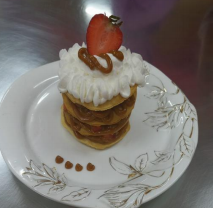

← Volver al módulo 5

Torta Pencos
Torta elaborada con capas de masa horneada, relleno de manjar, coco rallado y decoración de crema y frutillas.
Ingredientes
- 9 yemas
- 1 ½ cdas de aceite
- 1 ½ cdas de vinagre blanco
- 1 ½ cdas de alcohol
- 1 ½ taza de harina
Relleno
- Manjar de dulce de leche
- Azúcar impalpable
- Coco rallado cantidad necesaria
Decoración
- Crema de gusto
- Frutillas
Preparación
Realizar mise en place.
Batir las yemas hasta blanquear; agregar aceite en hilo, vinagre y alcohol mientras se bate.
Pasar la mezcla al bol de harina y compactar poco a poco, retirando pequeñas porciones y volviéndolas a juntar.
Uslerear la masa y cortar círculos; colocar en placa enmantecada y hornear.
Dejar enfriar y rellenar con manjar; espolvorear azúcar impalpable y coco rallado. Repetir el procedimiento tres veces con capas de masa horneada.
Batir crema y con una manga realizar diseño en la parte superior; decorar con manjar y colocar frutilla encima.